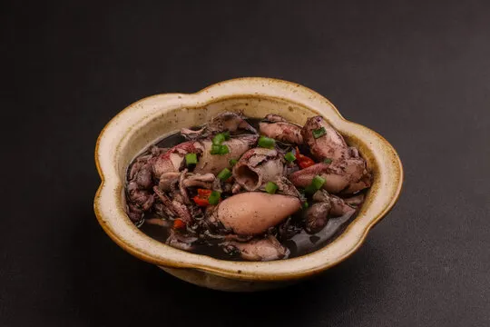

Adobong Pusit
Ingredients:
- 1/2 kg fresh squid (cleaned and cut into rings)
- 1/4 cup soy sauce
- 1/4 cup vinegar
- 1 head garlic (minced)
- 1 medium onion (sliced)
- 2 tablespoons cooking oil
- 1/2 teaspoon ground black pepper
- 1/2 teaspoon sugar
- 1 bay leaf
- Salt to taste
- Water as needed